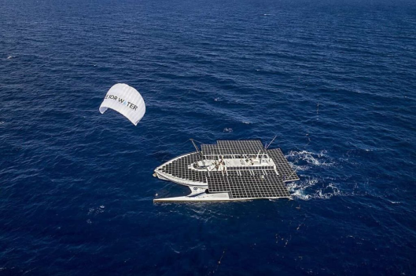
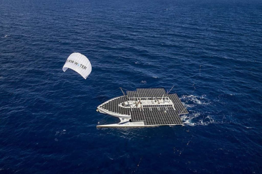

x
x
 

Race for Water est une fondation suisse créée en 2010 pour préserver les océans et lutter contre la pollution plastique. Elle sensibilise aux impacts des déchets plastiques sur les écosystèmes marins, promeut des solutions durables pour réduire leur usage, et soutient des technologies innovantes comme la pyrolyse pour transformer les déchets en énergie. À bord du catamaran "Race for Water", propulsé par des énergies renouvelables, l’équipe mène des expéditions mondiales, organise des ateliers éducatifs et partage des solutions pour protéger les ressources en eau et promouvoir une économie circulaire.
Un groupe d'étudiants du BUT Informatique de l'IUT de Nevers s'est rassemblé autour d'une drôle de passion commune : les pingouins ! Et attention à ne pas les confondre avec les manchots. Malgré une différence de niveau entre les membres, certains étant en 1ère année et d'autres en 3ème année, ils ont su se répartir équitablement les tâches pour mener à bien les défis de la nuit de l'informatique et de Race for water qui se présentaient à eux ! Pingouins !!!
La Nuit de l'Informatique est un événement annuel dédié à l'exploration et à la célébration des technologies numériques. Elle rassemble étudiants, professionnels et passionnés autour de conférences, ateliers, et compétitions de programmation. L'objectif est de favoriser les échanges, de promouvoir l'innovation et de résoudre des défis techniques en équipe. Cet événement offre une occasion unique de networking et de développement de compétences, tout en mettant en lumière les avancées et enjeux actuels de l’informatique.